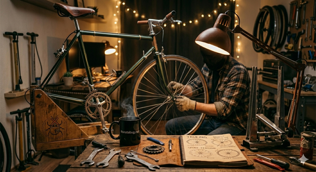

1. Threats to the eye
Prolonged staring at a screen and exposure to blue light can lead to computer vision syndrome (double vision), dry eyes, and serious retinal damage. [w1, w2, w3]
2. Disorders of the musculoskeletal system
Unergonomic posture and lack of adequate exercise result in spine pain, degeneration, and overuse injuries such as carpal tunnel syndrome. [w1, w4, w5]
3. Mental health problems
Working in front of a computer, especially remotely, often blurs the boundaries between private and professional life, which significantly increases the risk of social isolation and chronic stress.and burnout. [w6]
4. Sleep and circadian rhythm disorders
Exposure to blue light emitted by monitors inhibits the secretion of melatonin, which directly disrupts the internal biological clock and impairs sleep quality. [w3]
So what exactly is this "low-tech hobby"? As you can probably guess, it's a hobby that requires no electronics, or very little.
5. Why is digital detox important?
Humans weren't designed to constantly stare at a screen. That's why digital detox and low-tech hobbies are so important. So what exactly is this "low-tech hobby"? Essentially, it's any activity that doesn't require electronics, such as cycling, gardening, or modeling.
I chose cycling. Why?
6. Mechanics Instead of Codes
A bicycle, as an analog (the word sounds strange somehow) machine, requires attention, lubrication, and adjustments—it's "debugging" in the physical world. The satisfaction of repairing it yourself and understanding its simple, mechanical principles is a fantastic feeling. When a "bug" appears, like a squeak, it needs to be addressed. Just like in IT. The bicycle is placed on a special stand, and the screwdrivers are turned. A well-tuned bicycle is much more enjoyable to ride.
7. Active Meditation
The repetition of pedaling and a relatively even breathing rhythm create ideal conditions for organizing thoughts, allowing for unconscious problem-solving (the so-called shower effect). While riding, I don't focus on pedaling or the readings on my bike computer. My thoughts have complete freedom, allowing them to form a coherent idea, more or less consciously. Often, after 50 km, I have so many ideas that I have to write them down to avoid forgetting them. Problems that seemed impossible suddenly resolve themselves. My mind clears and de-stresses.
8. Cycling and Improving Cognitive Functions
The impact of cycling on cognitive functions is directly related to increased oxygenation of the body, which is crucial for brain function. Physical activity in fresh air forces you to breathe deeper and more evenly, which immediately improves cerebral circulation. Better blood flow means more efficient delivery of oxygen and glucose, the fuel for neurons. As a result, there is a significant improvement in concentration, ability to focus, and overall mental performance. In combination with active meditation, improved circulation, and reduced mental tension, cycling is an ideal antidote for the brain.
A sense of contact with the environment that is not generated by pixels.
That's probably the best part. The connection with your surroundings, the wind in your hair... If you have the opportunity, I recommend trails along rivers or through forests. In my opinion, the best option. Fresh air and the beauty of nature guarantee relaxation. To top it all off, there's the minimalist equipment. Your bike computer or smartwatch can be active during the trip, but you shouldn't focus on them. I always carry my bike computer with a map. However, I often find myself riding somewhere straight ahead without a map. I only turn on my navigation when I want to return but don't know where I am.
9. Progress
Back in high school, I used to ride my bike everywhere and in all weather conditions. Even in winter at -20 degrees Celsius. Then I stopped for a long time because of studies, work, and household chores. In 2024, I decided to return to this hobby and started riding my old MTB.
In 2025, I bought an old road bike (racing bike) and a few weeks later, a new road bike. That’s how much I enjoyed cycling. I even started cycling to the office (48 km each way). It's astonishing. And in a few weeks, I'm riding in the Brussels Cycling Marathon (BXL Tour).
Trip statistics:
| Year | km |
|---|---|
| 2023 | 0 |
| 2024 | 303 |
| 2025 | 5100 |
| 2026 (until May) | 920 |
10. My advice
Find a hobby that eliminates electronics. It doesn't have to be physical activity (although that will have positive health benefits). It could be crafts (scrapbooking) or D&D. Whatever relaxes you and doesn't require looking at a screen. The TV is of the table ;)
11. Summary
Cycling provides both physical and mental benefits. It improves cognitive functions by increasing oxygenation of the body and improving cerebral circulation, which results in a more efficient delivery of oxygen and glucose to neurons. This leads to significant improvements in concentration and overall mental performance. Additionally, the repeatable rhythm of pedaling acts as an "active meditation", allowing you to organize your thoughts and unconsciously solve problems (so-called shower effect) and cleansing and de-stressing the mind.
The bike also offers the satisfaction of “debugging in the physical world”—as an analog machine, it requires attention, lubrication, and adjustments, which is a contrast to the abstract work of working with code. The most important benefit, however, is the feeling of grounding and direct contact with the surroundings, which is impossible to achieve through screens.
12. Bibliography
- [w1] Long-term work on a computer and its consequences; online
- [w2] How to protect your eyesight when working at a computer: a health prevention guide; online; Poland; District Sanitary and Epidemiological Station in Pyrzyce
- [w3] The impact of blue light on health; online; Poland; EyeShield; published 2025-11-25;
- [w4] Back pain at the computer – what to do, how to help yourself?; online; Poland; Salveo;
- [w5] A way for busy hands.; online; Poland; For good health
- [w6] Remote work and mental health – how to take care of yourself when working from home?; online; Poland; Ośrodek Centrum;